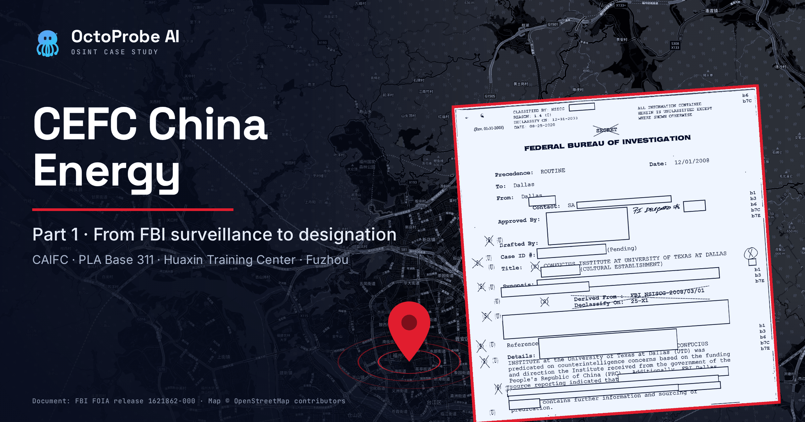
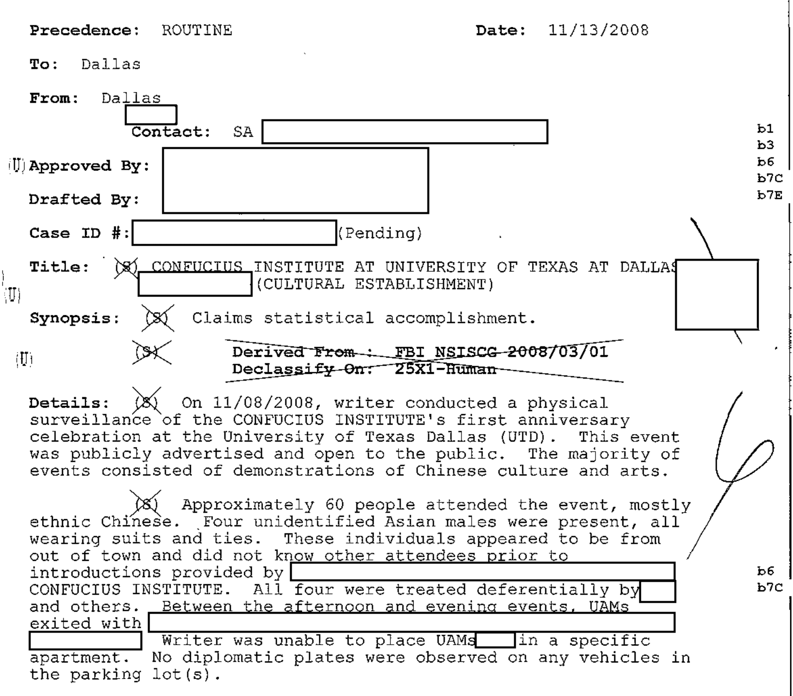
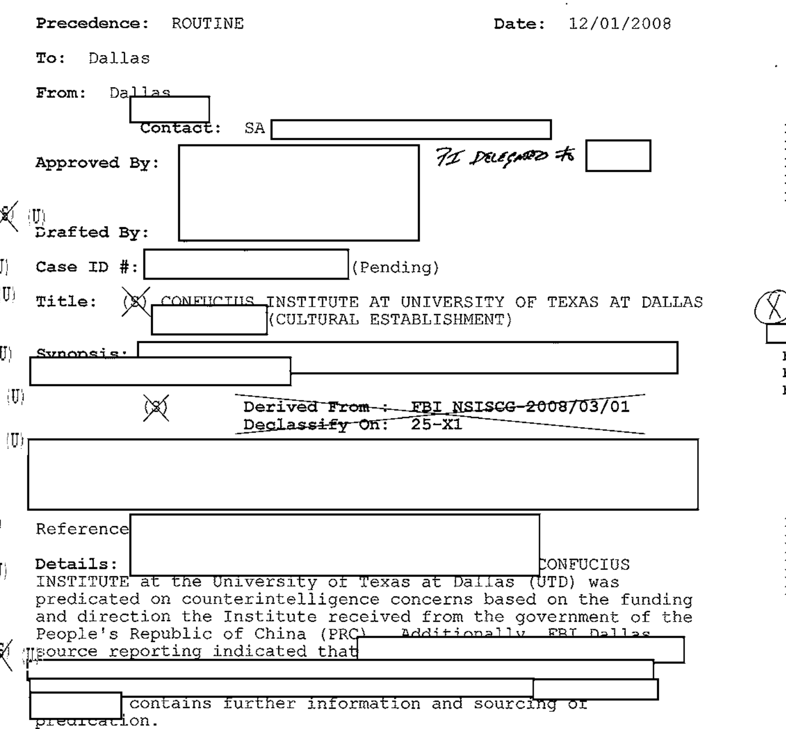
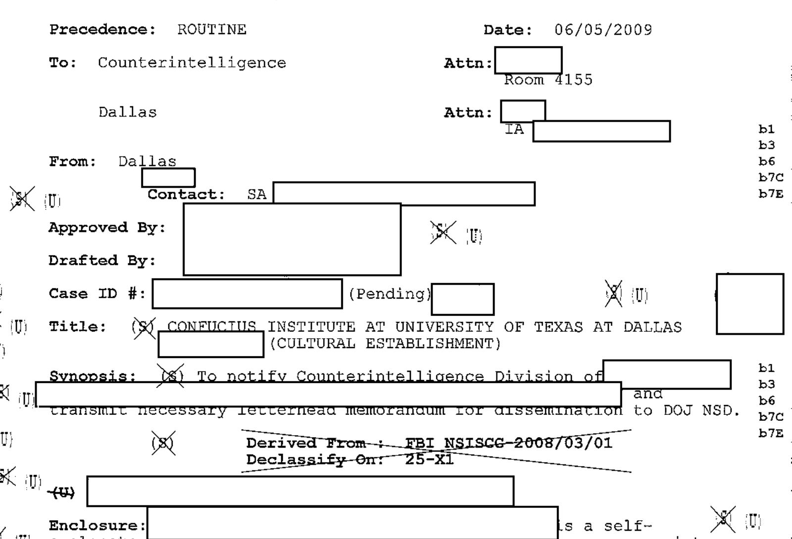
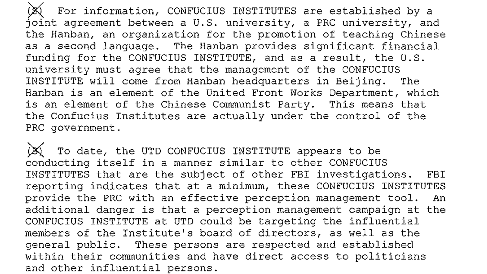
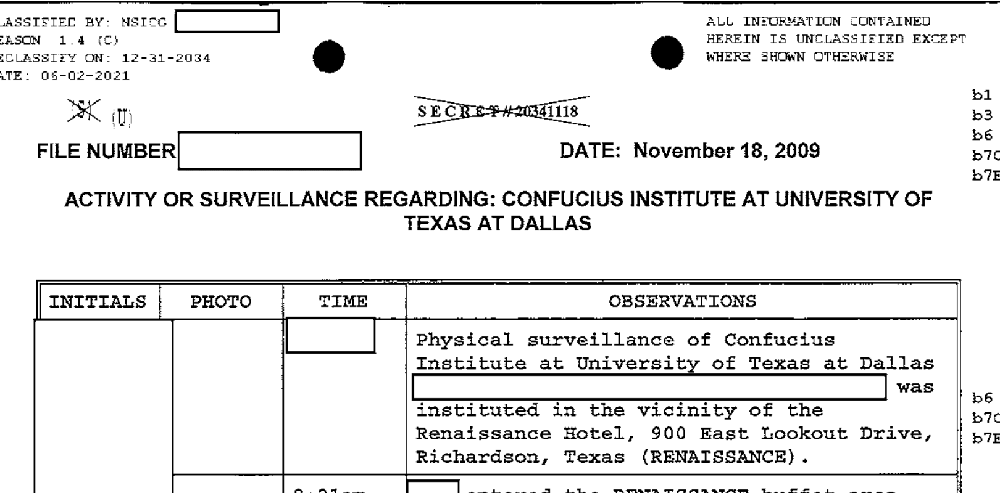
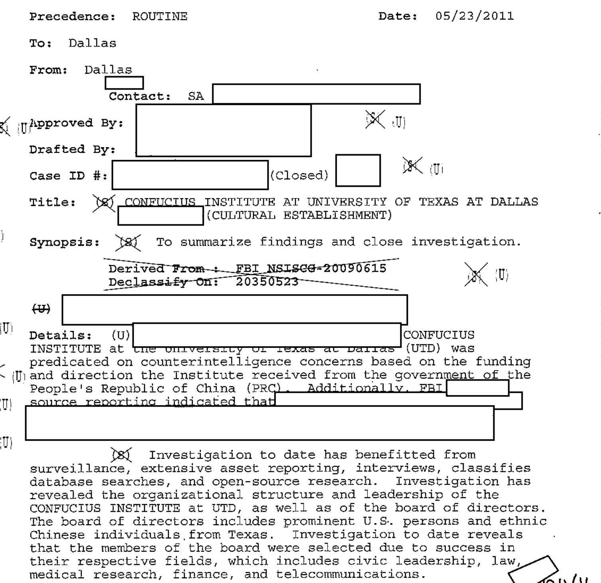
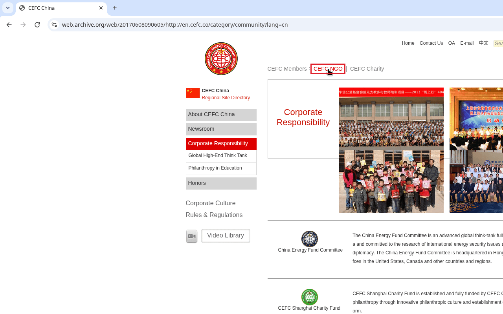

The documents in this analysis support one central finding: it took nearly a decade to go from physical surveillance to designation on the national side. FBI records released under the Freedom of Information Act (FOIA) show the bureau’s Dallas field office running a counterintelligence case on the Confucius Institute at the University of Texas at Dallas by August 2008. An agent watched the institute’s first-anniversary celebration on November 8, 2008, and formal surveillance logs followed in November 2009. In June 2009, Dallas sent headquarters a memorandum “for dissemination to DOJ NSD,” the Justice Department’s National Security Division. The State Department designated the Confucius Institute U.S. Center as a foreign mission on August 13, 2020.
Measured from the last surveillance log in the release, in September 2010, that took nine years and ten months. Measured from the first documented surveillance, it took nearly twelve years. The first national-level restriction this analysis found, a 2018 ban on Pentagon funding for Chinese-language instruction by Confucius Institutes, came nearly ten years after that first surveillance.
During those years a second record grew in public view: CEFC China Energy. Its own 2012 annual report says its chairman, Ye Jianming, was deputy secretary-general of CAIFC, which a U.S. congressional commission’s staff later called a front for the PLA’s former General Political Department. Studies by Project 2049 (2013), Singapore’s RSIS (2015), and France’s IRSEM (2021) tied CEFC’s companies and charity to Base 311, the PLA’s political-warfare base in Fuzhou. And CEFC’s charity listed a Confucius Institute on its own partner page.
The FBI files never mention CEFC. The two records are separate. This analysis puts them on one timeline to show how long both existed before national action.
How Strong Is Each Piece?
This analysis rates each claim by the strength of its sourcing.
- High confidence: a primary document, checked word for word. Examples: CEFC’s 2012 annual report, CEFC’s archived web pages, federal court records, and the FBI FOIA release.
- Medium confidence: a reputable secondary source, or one source not yet corroborated. Example: the Project 2049 and IRSEM accounts of the Huaxin Training Center.
- Low confidence: circumstantial, or a source not located. This piece leaves out low-confidence claims or labels them as such.
| Claim | Main source | Confidence |
|---|---|---|
| FBI Dallas ran a counterintelligence case on a Confucius Institute by August 26, 2008, and conducted physical surveillance from November 8, 2008 | FBI FOIA release | High |
| In June 2009 the case went to FBI Counterintelligence Division with a memorandum for dissemination to DOJ’s National Security Division | FBI FOIA release | High |
| Ye Jianming was CAIFC deputy secretary-general, 2003–2005 | CEFC International 2012 annual report | High |
| CAIFC is a front for the PLA’s former General Political Department | USCC staff report (2018) | High that the report says so |
| Base 311 (Unit 61716) is the PLA’s political-warfare base in Fuzhou | Project 2049; Global Taiwan Institute; IRSEM | High |
| A CEFC-linked training center supports Base 311 and sits around the corner from it | Project 2049 (2013); IRSEM (2021) | Medium |
| CEFC described its charity as “fully sponsored by CEFC China” | CEFC website, Wayback capture, June 8, 2017 | High |
| CEFC’s charity listed a Confucius Institute and IAGS as partners | CEFC NGO website, Wayback capture, April 17, 2017 | High |
| CEFC’s charity served as a corporate cover for influence work | Assessment based on Project 2049, RSIS, CEFC, and Justice Department records | Medium (analytic judgment) |
The Timeline: From the First FBI File to Designation
Entries marked FBI come from FBI FOIPA release 1621862-000 (a 144-page PDF released April 29, 2024). The release concerns the Confucius Institute at the University of Texas at Dallas and does not mention CEFC. All other entries come from separate public sources.
| Date | Record | What it shows | Source |
|---|---|---|---|
| Aug. 26, 2008 | FBI | Earliest dated record in the release: a Dallas communication on the Confucius Institute at UTD, case pending. | PDF p. 14 |
| Nov. 8, 2008 | FBI | An agent “conducted a physical surveillance of the CONFUCIUS INSTITUTE’s first anniversary celebration” at UTD (record dated Nov. 13, 2008). | PDF p. 17 |
| Dec. 1, 2008 | FBI | The case “was predicated on counterintelligence concerns based on the funding and direction the Institute received from the government of the People’s Republic of China (PRC).” | PDF p. 20 |
| June 5, 2009 | FBI | Dallas notifies FBI Counterintelligence Division and sends a “letterhead memorandum for dissemination to DOJ NSD.” The same record says the Hanban, the institutes’ sponsor, “is an element of the United Front Works Department.” | PDF pp. 32–33 |
| Nov. 17, 2009 | FBI | Agents document people observed at a Confucius Institute directors’ conference in Richardson, Texas (record dated Nov. 24, 2009). | PDF p. 41 |
| Nov. 18–19, 2009 | FBI | First formal surveillance logs: “Physical surveillance of Confucius Institute at University of Texas at Dallas” at a Richardson hotel. | PDF pp. 69, 71, 73 |
| July 24–Sept. 17, 2010 | FBI | Further surveillance logs; the subjects are redacted. | PDF pp. 84–105 |
| May 23, 2011 | FBI | Case closed after “surveillance, extensive asset reporting, interviews, classifies [sic] database searches, and open-source research.” | PDF p. 63 |
| 2013 | CEFC | CEFC International’s annual report for 2012 states that Ye Jianming worked “in CAIFC as deputy secretary-general” from 2003 to 2005. | Annual report, p. 8 |
| Oct. 14, 2013 | Analysis | Project 2049 reports that Base 311 is supported by the Huaxin Training Center, tied to a CEFC subsidiary in Fujian. | Stokes and Hsiao, p. 29 |
| Dec. 2, 2015 | Analysis | RSIS lists the China Energy Fund Committee among the civilian and business platforms for which Base 311 served as a military unit cover designator. | Raska, CO15262 |
| Summer–Dec. 2015 | Allegation | A later indictment alleges that the head of CEFC’s charity offered Gal Luft’s think tank $350,000 a year and that the charity sent $350,000 in December 2015. | Luft indictment, p. 4 |
| Apr. 17, 2017 | CEFC | Wayback capture of the CEFC NGO partner page lists 孔子学院 (Confucius Institute) and IAGS. | Capture |
| June 8, 2017 | CEFC | Wayback capture of CEFC’s corporate site links “CEFC NGO” and calls the charity “fully sponsored by CEFC China.” | Capture |
| Nov. 18, 2017 | Court | Patrick Ho, head of CEFC’s charity, is arrested in New York. | ICE release |
| Feb. 8, 2018 | Court | Government files notice that it will use Foreign Intelligence Surveillance Act information against Ho. | Doc. 45 |
| Aug. 13, 2018 | National | First national-level restriction found: the defense authorization act bars Pentagon funds for “Chinese language instruction provided by a Confucius Institute.” | Pub. L. 115-232, § 1091 |
| Aug. 24, 2018 | Analysis | USCC staff report calls CAIFC “a front organization for the former General Political Department.” | Bowe, p. 9 |
| Nov. 14, 2018 | Court | Pretrial ruling: Judge Preska admits evidence of Ho’s interest in “transactions in or with Iran, and arms transactions” (uncharged conduct) and bars a defense expert on CEFC’s state ties. | Doc. 193, pp. 50, 57 |
| Dec. 2018; Mar. 25, 2019 | Court | Ho is convicted of FCPA and money-laundering offenses, then sentenced to three years. | Justice Dept. |
| Aug. 13, 2020 | National | State Department designates the Confucius Institute U.S. Center as a foreign mission. The action does not close the center or individual institutes. | State Dept. |
| Oct. 2021 | Analysis | IRSEM, the French Ministry for the Armed Forces’ research institute, places Base 311’s official address in Fuzhou’s Gulou District, “just around the corner” from the Huaxin training center. | IRSEM, pp. 90–91 |


The gap, computed from the documents:
- First dated record in the release (August 26, 2008) to designation (August 13, 2020): eleven years, eleven months, and eighteen days.
- First documented physical surveillance (November 8, 2008) to designation: eleven years, nine months, and five days.
- First formal surveillance log (November 18, 2009) to designation: ten years, eight months, and twenty-six days.
- Last surveillance log in the release (September 17, 2010) to designation: nine years, ten months, and twenty-seven days.
- Case closure (May 23, 2011) to designation: nine years, two months, and twenty-one days.
- First documented surveillance to the first national-level restriction (August 13, 2018): nine years, nine months, and five days.
What the FBI Files Show
The earliest dated record in the release is an August 26, 2008, communication from FBI Dallas about the institute, which had opened at the university the previous November. By November 2008, agents were in the field. A record dated November 13, 2008, reports that on November 8 the writer “conducted a physical surveillance of the CONFUCIUS INSTITUTE’s first anniversary celebration” at the university. About sixty people attended. The agent noted four unidentified men in suits who “were treated deferentially.”


A December 1, 2008, communication states the basis for the case.


By June 2009 the case had gone to headquarters, with a memo meant for the Justice Department. The synopsis of a record dated June 5, 2009, reads: “To notify Counterintelligence Division of [redacted] and transmit necessary letterhead memorandum for dissemination to DOJ NSD.”


The same June 2009 record gives the field office’s view of the sponsor: “The Hanban is an element of the United Front Works Department, which is an element of the Chinese Communist Party. This means that the Confucius Institutes are actually under the control of the PRC government.” The passage recurs in later records. It is the Dallas office’s assessment, not a finding by the bureau as a whole.


Formal surveillance logs began in November 2009. On November 17, agents observed a Confucius Institute directors’ conference in Richardson, Texas, sponsored by the UTD institute. A log dated the next day records “Physical surveillance of Confucius Institute at University of Texas at Dallas” near a Richardson hotel.


The case closed on May 23, 2011. The closing summary says the “[i]nvestigation to date has benefitted from surveillance, extensive asset reporting, interviews, classifies [sic] database searches, and open-source research.”


Two limits apply. CEFC does not appear anywhere in the release, so it says nothing about whether the FBI examined the company. And the release is one field office’s file; it does not show what other agencies held.
CEFC’s Chairman and CAIFC
A 2018 staff report for the U.S.-China Economic and Security Review Commission, Alexander Bowe’s China’s Overseas United Front Work: Background and Implications for the United States, says the China Association for International Friendly Contact (CAIFC), “a front organization for the former General Political Department, performs dual roles of intelligence collection and conducting propaganda and perception management campaigns.” The commission notes that the report’s release “does not necessarily imply an endorsement by the Commission.”
CEFC International, the company’s Singapore-listed arm, disclosed Ye’s CAIFC post in its own 2012 annual report: “From 2003 to 2005, Mr. Ye Jianming has been working in CAIFC as deputy secretary-general.” That is the strongest single piece of the CEFC record, because it is the company’s own statement to investors. Project 2049 adds a caveat: Ye “was deputy secretary general of CAIFC, or possibly CAIFC’s Shanghai branch, from 2003 to 2005.”
Base 311 and CEFC’s Fuzhou Footprint
Base 311, also known as Unit 61716, is the PLA’s main base for “three warfares” operations against Taiwan. Writing for the Global Taiwan Institute in 2017, Elsa B. Kania called it the “Public Opinion Warfare, Psychological Warfare, and Legal Warfare Base.” Mark Stokes and Russell Hsiao’s 2013 Project 2049 study, The People’s Liberation Army General Political Department: Political Warfare with Chinese Characteristics, reports that “The 311 Base oversees at least six regiments responsible for psychological warfare and propaganda targeting public opinion on Taiwan” and that “The 311 Base’s commercial persona is the China Huayi Broadcasting Corporation (CHBC).”
The CEFC link runs through a training center. Project 2049 reports that “The 311 Base is supported by the Huaxin Training Center (华信培训中心), which is affiliated and collated with a subsidiary of the China Huaxin Energy Company—the Fujian Huaxin Holding Company.” China Huaxin Energy (中国华信能源有限公司) is the Chinese name of CEFC China Energy. The study names Lan Huasheng as general manager of the CEFC Fujian Holding Company and adds: “Lan concurrently serves as CEFC deputy secretary general and executive director of the China Institute of Culture.” It also states that “CEFC has a cooperative relationship with GPD-related organizations, such as the Nishan Forum and the GPD 311 Base.” In those two sentences, “CEFC” means the China Energy Fund Committee, the company’s charity.
Location. Project 2049’s footnotes place the training center at 3 Meifeng Road (梅峰路3号) in Fuzhou, “co-located with the 61070 Unit,” which the study identifies as Base 311’s network propaganda center. A 2021 report for IRSEM, the French Ministry for the Armed Forces’ strategic research institute, went further. Paul Charon and Jean-Baptiste Jeangène Vilmer’s Chinese Influence Operations: A Machiavellian Moment says Base 311’s “headquarters are in Fuzhou, the capital city of Fujian, a province that faces Taiwan. Several recent official websites indicated that its address is 77 Meizhu Street, in the city’s Gulou District” (pp. 90–91). The authors found a public pool at that address. From satellite imagery, they identified a site “several dozens of meters to the north that resembles a military site.” They conclude that “the site is just around the corner from the Huaxin training center affiliated to Base 311” (p. 91) and that Unit 61070 “is located a few buildings down from Base 311, at 3 Meifeng Street” (p. 111).
IRSEM also says that “The Huaxin Training Center, which is connected to CEFC China Energy, is affiliated to Base 311 as well” (p. 110). It reports that Huaxin Holdings, the Fujian company, “was founded in September 2005—the same year as Base 311—by CEFC China Energy Co. Ltd” (p. 117); CEFC International’s 2012 annual report dates Ye’s founding of Fujian Huaxin Holdings to 2006. Citing the Taiwan-based analyst J. Michael Cole, IRSEM adds that “the CEFC China Energy think tank rented office space in Base 311’s offices” (p. 117). That last point is secondhand and is rated low confidence here.
On IRSEM’s account, then, CEFC’s Fuzhou footprint was around the corner from Base 311. OpenStreetMap contributors map a military area labeled “311基地” in Gulou District, between Meizhu Road and Meifeng Road, which fits that description. This analysis did not independently geolocate the training center’s building and gives no distance. Confidence: medium, resting on Project 2049 and on IRSEM, which draws partly on Project 2049.
CEFC’s Charity: Corporate Site, Philanthropy Arm, and Partner Roster
CEFC’s own websites show how the company presented its charity. A Wayback Machine capture of CEFC’s English corporate site from June 8, 2017, en.cefc.co, Corporate Responsibility, lists “CEFC Members : CEFC NGO | CEFC Charity,” with “CEFC NGO” linking to the charity’s site, cefc-ngo.co. The same page describes the charity in CEFC’s words: “The China Energy Fund Committee is an advanced global think-tank fully sponsored by CEFC China and committed to the research of international energy security issues and the promotion of public diplomacy. The China Energy Fund Committee is headquartered in Hong Kong with more than 10 offces [sic] in the United States, Canada and other countries and regions.”


The charity’s partner page, as captured on April 17, 2017, is headed 香港中华能源基金会 (Hong Kong China Energy Fund Committee). Under 学术机构 (“academic institutions”) it lists 孔子学院, the Confucius Institute. Under 联合国组织及政府研究机构 (“United Nations organizations and government research institutions”) it lists IAGS as 美国全球安全分析研究所 (“U.S. Institute for Global Security Analysis”). IAGS’s English name is the Institute for the Analysis of Global Security, the think tank Gal Luft co-directs. Below the roster, the page states:
香港中华能源基金委员会还与中国、美国、加拿大、德国等多国政府机构及政府咨询研究机构建立了密切的合作关係。
That translates as: “The Hong Kong China Energy Fund Committee has also established close cooperative relationships with government agencies and government advisory and research institutions in many countries, including China, the United States, Canada, and Germany.”


The roster is long, and most names on it are mainstream. It includes Peking University and Zhejiang University, Columbia University’s Earth Institute, Georgetown’s Berkley Center, and the RAND Corporation. It also lists the National Committee on American Foreign Policy, the Center for Strategic and International Studies, the National Bureau of Asian Research, the United Nations Food and Agriculture Organization, and the U.S. Energy Information Administration, along with the Chinese People’s Institute of Foreign Affairs (中国人民外交协会). A listing shows only that CEFC’s charity claimed the relationship. It does not show that any partner did anything wrong, or even that each one agreed to be listed. The analytic point is narrower: a Confucius Institute and Luft’s IAGS appear on CEFC’s own partner roster alongside them.
The IAGS entry has a money trail, though only in allegations. The 2022 indictment of Luft does not name his think tank. It alleges that in summer 2015 the head of CEFC’s charity, identified as CC-1, “offered GAL LUFT, the defendant, annual payments of $350,000 from CEFC to the Think Tank.” It adds: “In or about December 2015, CEFC sent the Think Tank $350,000.” The indictment also alleges that in October 2016, CC-1 told Luft that “the then-chairman of CEFC China ‘agrees with the proposal for’” a former senior U.S. government official, identified as Individual-1, and that “[Individual-1] will be invited to China undercover.” Luft was arrested in Cyprus in February 2023 and fled while on bail. In September 2024, prosecutors told the court he had been re-arrested and that extradition was proceeding. Cyprus’s Supreme Court rejected one of his challenges in February 2025. As of October 2026, the public federal docket shows no arraignment, plea, or trial. The allegations are unproven.
Assessment: Philanthropy as Corporate Cover
This analysis assesses, with medium confidence, that CEFC used its charity, the China Energy Fund Committee, as a philanthropic and think-tank front for corporate and state-aligned influence work. That is an analytic judgment, not a stated fact. It rests on five sourced points:
- Parent-to-charity link, in CEFC’s words. CEFC called the charity “fully sponsored by CEFC China,” and the Justice Department said “CEFC NGO was funded by CEFC China.”
- A propaganda mission, per Project 2049. The study calls the charity “an administrative subsidiary of the China Huaxin Energy Company” with “a distinct energy, maritime security, and cultural propaganda mission.” It reports that the Nishan Forum’s organization “overlaps with GPD/LD, CAIFC, China Energy Fund Committee, and other cultural associations.”
- A military cover designator. RSIS names the China Energy Fund Committee among platforms for which Base 311 “has served as a de-facto military unit cover designator (MUCD).” It calls the charity “a political arm of its holding subsidiary the China Huaxin Energy Co. Ltd.”
- Concealment in a proven case. At Ho’s sentencing, Assistant Attorney General Brian A. Benczkowski, head of the Justice Department’s Criminal Division, said Ho bribed officials “all while using a U.S.-based NGO to conceal his criminal scheme.”
- Elite access. The partner roster, the charity’s “special consultative status” with the United Nations Economic and Social Council, and RSIS’s account of CEFC in the Czech Republic (below) show the charity working at the level of governments and elite institutions.
What would weaken this assessment: evidence that the charity’s programs ran independently of CEFC’s commercial and political aims, or that the Project 2049 and RSIS sourcing on Base 311 was wrong.
RSIS on Hybrid Warfare and Elite Capture
On December 2, 2015, Michael Raska of Singapore’s S. Rajaratnam School of International Studies (RSIS) published “Hybrid Warfare with Chinese Characteristics” (RSIS Commentary CO15262). It names CEFC’s charity directly. Raska wrote that Base 311 “has served as a de-facto military unit cover designator (MUCD) for a number of GPD-LD’s affiliated civilian and business platforms.” His list ends with the “China Energy Fund Committee (CEFC).” He added that “CEFC’s Chairman Ye Jianming was deputy secretary general of the GPD-LD’s affiliated China Association for International Friendly Contacts (CAIFC) from 2003-05.”
Raska also described the method behind elite capture, the cultivation of influential foreigners. One core activity of the PLA’s liaison apparatus, he wrote, is “identifying select foreign political, business, and military elites and organisations abroad relevant to China’s interests or potential ‘friendly contacts.’” His example was CEFC in the Czech Republic: “These ‘investments’ have served as initial gateways to the highest political elites in the country. Indeed, CEFC’s chairman Ye Jianming was named an official adviser by the Czech President.”
The RSIS piece cites Project 2049, so it is not independent confirmation of the Base 311 link. Its significance on the timeline is the date. By December 2015 the link between CEFC’s charity and Base 311 was in print in English from a Singapore institute, four years and eight months before the designation.
The Prosecution Record, Briefly
Ho, the charity’s secretary-general, was arrested in November 2017. He was convicted in December 2018 of bribing officials in Chad and Uganda on CEFC’s behalf and sentenced to three years. Before trial, the government gave notice that it would use information “obtained or derived from electronic surveillance and physical search” under the “Foreign Intelligence Surveillance Act.” The court never ruled on CEFC’s state ties. Judge Loretta A. Preska barred the defense’s expert, Harvard China scholar William C. Kirby, ruling among other grounds that “It doesn’t matter whether CEFC China was closely tied to the Chinese state or not.”
The Finding
The documents support one conclusion above the others. It took nearly a decade to go from physical surveillance to designation on the national side. FBI agents were watching the Confucius Institute in Dallas in November 2008, and by June 2009 the field office had sent a memorandum for dissemination to the Justice Department’s National Security Division. The first national-level restriction came in August 2018. The designation of the Confucius Institute U.S. Center came on August 13, 2020: nearly ten years after the last surveillance log in the release, and nearly twelve years after the first documented surveillance.
For CEFC, the comparable public record ran from 2013 to 2017: the company’s own CAIFC disclosure, the Project 2049 study, the RSIS commentary, and CEFC’s web pages calling its charity “fully sponsored by CEFC China” and listing a Confucius Institute and IAGS as partners. The FBI files never mention CEFC, and nothing here shows that U.S. officials connected the two records. The timeline shows how long both were available.
What Remains Unknown
- Whether U.S. agencies assessed CEFC itself before 2017. The FBI release does not mention the company.
- When the FBI case was formally opened. The release’s recommendation to open a preliminary investigation (PDF p. 7) carries no typed date.
- What the June 2009 memorandum to DOJ’s National Security Division said, and what was done with it.
- Whether the Huaxin Training Center still supports Base 311, and the building’s exact location.
- Whether the partners listed on CEFC’s charity page agreed to the listing.
About This Series
This is Part 1 of a series on CEFC China Energy. Later parts will look at CEFC’s expansion in Europe and its pursuit of elite access, the U.S. prosecutions in more detail, and the corporate and email-domain network OctoProbe has mapped around CEFC’s entities.
Records referenced: FBI FOIPA request 1621862-000 (released April 29, 2024), obtained by Colin Aamot through FOIA; court filings in United States v. Ho, No. 17-cr-779 (S.D.N.Y.); the indictment in United States v. Luft, No. 22-cr-597 (S.D.N.Y.); and Wayback Machine captures of cefc-ngo.co (April 17, 2017) and en.cefc.co (June 8, 2017).